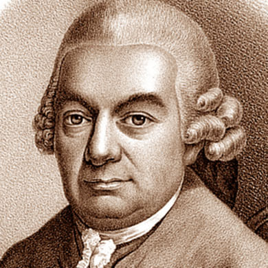

 Compositor y teclista alemán nacido el 8 de marzo de 1714 en Weimar y fallecido el 14 de diciembre de 1788 en Hamburgo.
Carl Philipp Emmanuel fue el quinto hijo, pero segundo vivo, de Johann Sebastian Bach y María Barbara, y el único que triunfó totalmente en su carrera. Recibió formación musical de su padre y posteriormente estudió música en la Thomasschule de Leipzig y Derecho en la universidad de dicha ciudad, así como en la de Frankfurt an den Oder.
A los 20 años ya brillaba como instrumentista (dominaba los instrumentos de teclado), profesor y compositor. En 1738 se incorporó en Ruppin a la orquesta de Federico II, príncipe heredero de Prusia, a quien siguió a Potsdam y después a Berlín cuando subió al trono. Durante estos años Carl Philipp escribió gran parte de sus sonatas para teclado (Sonatas de Prusia y Sonatas de Württemberg entre otras) A pesar de permanecer casi treinta años su servicio, Carl Philipp encontraba que el Rey dedicaba poco interés a sus composiciones en favor de las de otros músicos de la corte como G. Benda, Johann J. Quantz o K. H. Graun. Asimismo, su salario era inferior al de estos músicos, por lo que en 1767 decidió abandonar la corte y trasladarse a Hamburgo.
Allí sucedió a G. P. Telemann, que acababa de fallecer, como Director Musices. Para acceder a este cargo presentó un Magnificat en re mayor, creado al principio de su época berlinesa. A partir de entonces, y hasta su muerte, se ocupó de la cantoría de Johanneum y de las cinco principales iglesias de Hamburgo, de ahí que fuera conocido a lo largo de Europa como “el Bach de Hamburgo”. Dio un gran impulso a la vida musical de esta ciudad, ya que su frenética actividad le llevó a escribir durante esa época gran parte de su obra vocal de carácter sacro, como los oratorios Die Israeliten in der Wüste (1769), Die letzten Leiden des Erlösers (1770) o el más célebre, La Resurrección y Ascensión de Jesús Wq. 240 (1777-1780). También dio a conocer en Hamburgo el Mesías de Haendel, el Stabat Mater de Haydn, el Requiem de Jommelli y la Misa en si menor de J. S. Bach. Además, fue el encargado de publicar la obra de su padre hasta que apareció la edición de El clave bien temperado en 1801.
Su extensa producción, que fue ampliamente difundida cuando vivía, e incluye diversos oratorios y cantatas (en las que, en ocasiones, tomaba páginas de su padre), unas veinte sinfonías y más de cincuenta conciertos para uno o dos instrumentos de teclado, violonchelo o flauta. La parte más original de sus obras se encuentra, probablemente, en las composiciones para teclado. Entre los muchos títulos que cabe destacar se encuentran las seis colecciones de sonatas, rondós y fantasías para aficionados (1779 a 1787).
Si bien aprendió el lenguaje musical de su padre, pronto se distinguió por un estilo propio, homófono y a la moda de la época, el llamado empfindsamer Stil (estilo sentimental) que, frente a la simplicidad del estilo galante, buscaba la emoción del oyente. Para ello, recurrió al empleo de elementos como disonancias avanzadas, alternancia de modos mayor y menor o acordes interrumpidos.
Carl Philipp también redactó una obra teórica de gran importancia en su época. Se trata del Ensayo sobre la manera verdadera de tocar el teclado (1753) en dos volúmenes. Su obra completa fue catalogada por Alfred Wotquenne, de ahí que los números de referencia empleados para citar sus composiciones vayan acompañados de las letras “Wq”. Otra catalogación importante fue la realizada por Eugene Helm, que incluye cerca de 900 obras, 300 de las cuales son para instrumentos de teclado solo.
{kind=link}